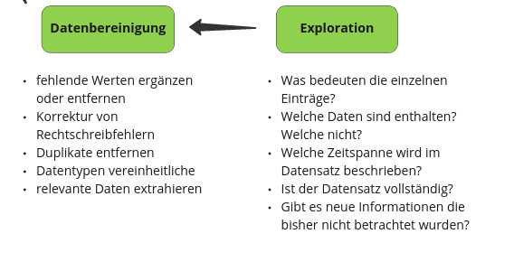

Datenanalyse Teil I#
Natalie Widmann#
Wintersemester 2023 / 2024
Datenanalyse und -verarbeitung in Python#
Ziele#
Verständnis der Datenverarbeitung
strukturierte Daten bearbeiten und analysieren mit Pandas
Visualisierung von Daten
Python Packages verwenden
unterschiedliche Datenformate (csv, json, excel, txt) einlesen und speichern

Was sind Daten?#
Strukturierte Daten#
Strukturierte Daten sind gut organisiert und so formattiert, dass es einfach ist sie zu durchsuchen, sie maschinell zu lesen oder zu verarbeiten. Das einfachste Beispiel ist eine Tabelle in der jede Spalte eine Kategorie oder einen Wert festlegt.
Unstrukturierte Daten#
Im Gegensatz dazu sind unstrukturierte Daten nicht in einem bestimmten Format oder einer festgelegten Struktur verfügbar. Dazu zählen Texte, Bilder, Social Media Feeds, aber auch Audio Files, etc.
Semi-Strukturierte Daten#
Semi-strukturierte Daten bilden eine Mischform. Beispielsweise eine Tabelle mit E-Mail Daten, in der Empfänger, Betreff, Datum und Absender strukturierte Informationen enthalten, der eigentliche Text jedoch unstrukturiert ist.
Was sind Daten?#

Pandas#
Pandas ist ein Python Package und ist abgeleitet aus “Python and data analysis”.
Pandas stellt die Grundfunktionalitäten für das Arbeiten mit strukturierten Daten zur Verfügung.

Photo by Stone Wang on Unsplash
Python Packages#
Packages, auch Module genannt, sind vorgefertigte Code-Pakete, deren Funktionen wir wir verwenden können ohne diese selbst programmieren zu müssen.
Manche Packages sind in Python vorinstalliert und müssen nur noch importiert werden, wie beispielsweise
# Zufälliger Integer Wert mit random package
import random
print(random.randint(10,20))
12
# das heutige Datum über datetime ausgeben lassen
import datetime
print(datetime.datetime.today())
2023-12-03 15:54:42.019360
Installation von Python Packages#
Packages die von der Python Community zur Verfügung gestellt werden, müssen vor der Verwendung installiert werden. Dafür kann pip als Packagemanager verwendet werden.
Tipps für die Installation von Python Packages in Windows, Linux und Mac gibt es hier: https://packaging.python.org/en/latest/tutorials/installing-packages/
In Jupyter Notebooks können Packages wie folgt installiert werden:
# Install a pip package im Jupyter Notebook
import sys
!pip install pandas
!pip install openpyxl
Requirement already satisfied: pandas in /home/natalie/Dokumente/Datenjournalismus in Python/Code/.venv/lib/python3.11/site-packages (2.1.3)
Requirement already satisfied: numpy<2,>=1.23.2 in /home/natalie/Dokumente/Datenjournalismus in Python/Code/.venv/lib/python3.11/site-packages (from pandas) (1.26.2)
Requirement already satisfied: python-dateutil>=2.8.2 in /home/natalie/Dokumente/Datenjournalismus in Python/Code/.venv/lib/python3.11/site-packages (from pandas) (2.8.2)
Requirement already satisfied: pytz>=2020.1 in /home/natalie/Dokumente/Datenjournalismus in Python/Code/.venv/lib/python3.11/site-packages (from pandas) (2023.3.post1)
Requirement already satisfied: tzdata>=2022.1 in /home/natalie/Dokumente/Datenjournalismus in Python/Code/.venv/lib/python3.11/site-packages (from pandas) (2023.3)
Requirement already satisfied: six>=1.5 in /home/natalie/Dokumente/Datenjournalismus in Python/Code/.venv/lib/python3.11/site-packages (from python-dateutil>=2.8.2->pandas) (1.16.0)
Requirement already satisfied: openpyxl in /home/natalie/Dokumente/Datenjournalismus in Python/Code/.venv/lib/python3.11/site-packages (3.1.2)
Requirement already satisfied: et-xmlfile in /home/natalie/Dokumente/Datenjournalismus in Python/Code/.venv/lib/python3.11/site-packages (from openpyxl) (1.1.0)
import pandas
Idee, Daten finden & Verifikation#

Aggregated figures for Natural Disasters in EM-DAT#
Link: https://data.humdata.org/dataset/emdat-country-profiles
In 1988, the Centre for Research on the Epidemiology of Disasters (CRED) launched the Emergency Events Database (EM-DAT). EM-DAT was created with the initial support of the World Health Organisation (WHO) and the Belgian Government.
The main objective of the database is to serve the purposes of humanitarian action at national and international levels. The initiative aims to rationalise decision making for disaster preparedness, as well as provide an objective base for vulnerability assessment and priority setting.
EM-DAT contains essential core data on the occurrence and effects of over 22,000 mass disasters in the world from 1900 to the present day. The database is compiled from various sources, including UN agencies, non-governmental organisations, insurance companies, research institutes and press agencies.
import pandas as pd
data = pd.read_excel('../../data/emdat.xlsx', engine="openpyxl")
data
| Year | Country | ISO | Disaster Group | Disaster Subroup | Disaster Type | Disaster Subtype | Total Events | Total Affected | Total Deaths | Total Damage (USD, original) | Total Damage (USD, adjusted) | CPI | |
|---|---|---|---|---|---|---|---|---|---|---|---|---|---|
| 0 | #date +occurred | #country +name | #country +code | #cause +group | #cause +subgroup | #cause +type | #cause +subtype | #frequency | #affected +ind | #affected +ind +killed | NaN | #value +usd | NaN |
| 1 | 2000 | Afghanistan | AFG | Natural | Climatological | Drought | Drought | 1 | 2580000 | 37 | 50000.0 | 84975 | 58.840648 |
| 2 | 2000 | Algeria | DZA | Natural | Hydrological | Flood | Flash flood | 2 | 105 | 37 | NaN | NaN | 58.840648 |
| 3 | 2000 | Algeria | DZA | Natural | Hydrological | Flood | Flood (General) | 2 | 100 | 7 | NaN | NaN | 58.840648 |
| 4 | 2000 | Algeria | DZA | Natural | Meteorological | Storm | Storm (General) | 1 | 10 | 4 | NaN | NaN | 58.840648 |
| ... | ... | ... | ... | ... | ... | ... | ... | ... | ... | ... | ... | ... | ... |
| 5834 | 2023 | Viet Nam | VNM | Natural | Meteorological | Storm | Tropical cyclone | 1 | 3 | 1 | NaN | NaN | NaN |
| 5835 | 2023 | Yemen | YEM | Natural | Hydrological | Flood | Flood (General) | 1 | 169035 | 39 | NaN | NaN | NaN |
| 5836 | 2023 | Zambia | ZMB | Natural | Hydrological | Flood | Flash flood | 1 | 154608 | NaN | NaN | NaN | NaN |
| 5837 | 2023 | Zambia | ZMB | Natural | Hydrological | Flood | Flood (General) | 1 | 22000 | NaN | NaN | NaN | NaN |
| 5838 | 2023 | Zimbabwe | ZWE | Natural | Meteorological | Storm | Tropical cyclone | 1 | NaN | 2 | NaN | NaN | NaN |
5839 rows × 13 columns
Datenexploration und -bereinigung#

Überblick über die Daten#
# head() gibt die ersten 5 Zeilen aus
data.head()
| Year | Country | ISO | Disaster Group | Disaster Subroup | Disaster Type | Disaster Subtype | Total Events | Total Affected | Total Deaths | Total Damage (USD, original) | Total Damage (USD, adjusted) | CPI | |
|---|---|---|---|---|---|---|---|---|---|---|---|---|---|
| 0 | #date +occurred | #country +name | #country +code | #cause +group | #cause +subgroup | #cause +type | #cause +subtype | #frequency | #affected +ind | #affected +ind +killed | NaN | #value +usd | NaN |
| 1 | 2000 | Afghanistan | AFG | Natural | Climatological | Drought | Drought | 1 | 2580000 | 37 | 50000.0 | 84975 | 58.840648 |
| 2 | 2000 | Algeria | DZA | Natural | Hydrological | Flood | Flash flood | 2 | 105 | 37 | NaN | NaN | 58.840648 |
| 3 | 2000 | Algeria | DZA | Natural | Hydrological | Flood | Flood (General) | 2 | 100 | 7 | NaN | NaN | 58.840648 |
| 4 | 2000 | Algeria | DZA | Natural | Meteorological | Storm | Storm (General) | 1 | 10 | 4 | NaN | NaN | 58.840648 |
Wie groß ist der Datensatz? Wie viele Zeilen und wie viele Spalten sind vorhanden?
data.shape
(5839, 13)
print(f'Anzahl an Zeilen: {data.shape[0]}')
print(f'Anzahl an Spalten: {data.shape[1]}')
Anzahl an Zeilen: 5839
Anzahl an Spalten: 13
Die Spaltennamen
print(data.columns)
Index(['Year', 'Country', 'ISO', 'Disaster Group', 'Disaster Subroup',
'Disaster Type', 'Disaster Subtype', 'Total Events', 'Total Affected',
'Total Deaths', 'Total Damage (USD, original)',
'Total Damage (USD, adjusted)', 'CPI'],
dtype='object')
info() für mehr Infos über die Spalten
print(data.info())
<class 'pandas.core.frame.DataFrame'>
RangeIndex: 5839 entries, 0 to 5838
Data columns (total 13 columns):
# Column Non-Null Count Dtype
--- ------ -------------- -----
0 Year 5839 non-null object
1 Country 5839 non-null object
2 ISO 5839 non-null object
3 Disaster Group 5839 non-null object
4 Disaster Subroup 5839 non-null object
5 Disaster Type 5839 non-null object
6 Disaster Subtype 5839 non-null object
7 Total Events 5839 non-null object
8 Total Affected 4693 non-null object
9 Total Deaths 4119 non-null object
10 Total Damage (USD, original) 2032 non-null float64
11 Total Damage (USD, adjusted) 2000 non-null object
12 CPI 5648 non-null float64
dtypes: float64(2), object(11)
memory usage: 593.2+ KB
None
describe() zeigt die grundlegenden statistischen Eigenschaften von Spalten mit numerischem Datentyp, also int und float.
Die Methode berechnet:
die Anzahl an fehlenden Werten
Durchschnitt
Standardabweichung
Zahlenrange
Media
0.25 und 0.75 Quartile
data.describe()
| Total Damage (USD, original) | CPI | |
|---|---|---|
| count | 2.032000e+03 | 5648.000000 |
| mean | 1.639897e+09 | 75.903707 |
| std | 8.550684e+09 | 11.063540 |
| min | 0.000000e+00 | 58.840648 |
| 25% | 2.000000e+07 | 66.731058 |
| 50% | 1.230000e+08 | 74.509444 |
| 75% | 7.427500e+08 | 83.757255 |
| max | 2.100000e+11 | 100.000000 |
.unique() zeigt die unterschiedlichen Werte einer Spalte an
data['Year'].unique()
array(['#date +occurred', 2000, 2001, 2002, 2003, 2004, 2005, 2006, 2007,
2008, 2009, 2010, 2011, 2012, 2013, 2014, 2015, 2016, 2017, 2018,
2019, 2020, 2021, 2022, 2023], dtype=object)
Data Cleaning: erste Zeile im DataFrame entfernen#
data.index
RangeIndex(start=0, stop=5839, step=1)
data = data.drop(index=0)
data
| Year | Country | ISO | Disaster Group | Disaster Subroup | Disaster Type | Disaster Subtype | Total Events | Total Affected | Total Deaths | Total Damage (USD, original) | Total Damage (USD, adjusted) | CPI | |
|---|---|---|---|---|---|---|---|---|---|---|---|---|---|
| 1 | 2000 | Afghanistan | AFG | Natural | Climatological | Drought | Drought | 1 | 2580000 | 37 | 50000.0 | 84975 | 58.840648 |
| 2 | 2000 | Algeria | DZA | Natural | Hydrological | Flood | Flash flood | 2 | 105 | 37 | NaN | NaN | 58.840648 |
| 3 | 2000 | Algeria | DZA | Natural | Hydrological | Flood | Flood (General) | 2 | 100 | 7 | NaN | NaN | 58.840648 |
| 4 | 2000 | Algeria | DZA | Natural | Meteorological | Storm | Storm (General) | 1 | 10 | 4 | NaN | NaN | 58.840648 |
| 5 | 2000 | Angola | AGO | Natural | Hydrological | Flood | Flood (General) | 3 | 9011 | 15 | NaN | NaN | 58.840648 |
| ... | ... | ... | ... | ... | ... | ... | ... | ... | ... | ... | ... | ... | ... |
| 5834 | 2023 | Viet Nam | VNM | Natural | Meteorological | Storm | Tropical cyclone | 1 | 3 | 1 | NaN | NaN | NaN |
| 5835 | 2023 | Yemen | YEM | Natural | Hydrological | Flood | Flood (General) | 1 | 169035 | 39 | NaN | NaN | NaN |
| 5836 | 2023 | Zambia | ZMB | Natural | Hydrological | Flood | Flash flood | 1 | 154608 | NaN | NaN | NaN | NaN |
| 5837 | 2023 | Zambia | ZMB | Natural | Hydrological | Flood | Flood (General) | 1 | 22000 | NaN | NaN | NaN | NaN |
| 5838 | 2023 | Zimbabwe | ZWE | Natural | Meteorological | Storm | Tropical cyclone | 1 | NaN | 2 | NaN | NaN | NaN |
5838 rows × 13 columns
Datentypen abfragen und anpassen#
data.info()
<class 'pandas.core.frame.DataFrame'>
RangeIndex: 5838 entries, 1 to 5838
Data columns (total 13 columns):
# Column Non-Null Count Dtype
--- ------ -------------- -----
0 Year 5838 non-null object
1 Country 5838 non-null object
2 ISO 5838 non-null object
3 Disaster Group 5838 non-null object
4 Disaster Subroup 5838 non-null object
5 Disaster Type 5838 non-null object
6 Disaster Subtype 5838 non-null object
7 Total Events 5838 non-null object
8 Total Affected 4692 non-null object
9 Total Deaths 4118 non-null object
10 Total Damage (USD, original) 2032 non-null float64
11 Total Damage (USD, adjusted) 1999 non-null object
12 CPI 5648 non-null float64
dtypes: float64(2), object(11)
memory usage: 593.1+ KB
# Datentyp Abfrage mit dem Attribut
data['Year'].dtype
dtype('O')
# Umwandlung des Datentyp
data["Year"] = pd.to_numeric(data["Year"])
data['Year'].dtype
dtype('int64')
# Auf alle integer und float Spalten anwenden
cols = ['Total Events', 'Total Affected', 'Total Deaths', 'Total Damage (USD, adjusted)']
for col in cols:
data[col] = pd.to_numeric(data[col])
data.info()
<class 'pandas.core.frame.DataFrame'>
RangeIndex: 5838 entries, 1 to 5838
Data columns (total 13 columns):
# Column Non-Null Count Dtype
--- ------ -------------- -----
0 Year 5838 non-null int64
1 Country 5838 non-null object
2 ISO 5838 non-null object
3 Disaster Group 5838 non-null object
4 Disaster Subroup 5838 non-null object
5 Disaster Type 5838 non-null object
6 Disaster Subtype 5838 non-null object
7 Total Events 5838 non-null int64
8 Total Affected 4692 non-null float64
9 Total Deaths 4118 non-null float64
10 Total Damage (USD, original) 2032 non-null float64
11 Total Damage (USD, adjusted) 1999 non-null float64
12 CPI 5648 non-null float64
dtypes: float64(5), int64(2), object(6)
memory usage: 593.1+ KB
Überblick über die numerischen Daten#
data.describe()
| Year | Total Events | Total Affected | Total Deaths | Total Damage (USD, original) | Total Damage (USD, adjusted) | CPI | |
|---|---|---|---|---|---|---|---|
| count | 5838.000000 | 5838.000000 | 4.692000e+03 | 4118.000000 | 2.032000e+03 | 1.999000e+03 | 5648.000000 |
| mean | 2011.188763 | 1.523296 | 9.624997e+05 | 343.869597 | 1.639897e+09 | 2.067216e+09 | 75.903707 |
| std | 7.060059 | 1.276850 | 8.601462e+06 | 5402.594471 | 8.550684e+09 | 1.107843e+10 | 11.063540 |
| min | 2000.000000 | 1.000000 | 1.000000e+00 | 1.000000 | 0.000000e+00 | 0.000000e+00 | 58.840648 |
| 25% | 2005.000000 | 1.000000 | 1.000000e+03 | 4.000000 | 2.000000e+07 | 2.479192e+07 | 66.731058 |
| 50% | 2011.000000 | 1.000000 | 1.000000e+04 | 14.000000 | 1.230000e+08 | 1.626990e+08 | 74.509444 |
| 75% | 2017.000000 | 2.000000 | 1.000000e+05 | 47.750000 | 7.427500e+08 | 9.921833e+08 | 83.757255 |
| max | 2023.000000 | 17.000000 | 3.300000e+08 | 222570.000000 | 2.100000e+11 | 2.732184e+11 | 100.000000 |
Überblick über die Objekt Daten#
# Unterschiedliche Länder
countries = data['Country'].unique()
print(countries)
['Afghanistan' 'Algeria' 'Angola' 'Argentina' 'Armenia' 'Australia'
'Austria' 'Azerbaijan' 'Bangladesh' 'Belarus' 'Belize' 'Bhutan'
'Bolivia (Plurinational State of)' 'Bosnia and Herzegovina' 'Botswana'
'Brazil' 'Bulgaria' 'Burundi' 'Cambodia' 'Cameroon' 'Canada' 'Chile'
'China' 'Colombia' 'Costa Rica' 'Croatia' 'Cuba' 'Cyprus' 'Czechia'
"Democratic People's Republic of Korea" 'Ecuador' 'Egypt' 'El Salvador'
'Eswatini' 'Ethiopia' 'Fiji' 'France' 'French Guiana' 'Georgia' 'Greece'
'Guatemala' 'Guinea' 'Haiti' 'Honduras' 'Hungary' 'Iceland' 'India'
'Indonesia' 'Iran (Islamic Republic of)' 'Ireland' 'Israel' 'Italy'
'Jamaica' 'Japan' 'Jordan' 'Kazakhstan' 'Kyrgyzstan'
"Lao People's Democratic Republic" 'Madagascar' 'Malawi' 'Malaysia'
'Mali' 'Mexico' 'Mongolia' 'Morocco' 'Mozambique' 'Namibia' 'Nepal'
'New Zealand' 'Nicaragua' 'Niger' 'Nigeria' 'North Macedonia' 'Norway'
'Pakistan' 'Panama' 'Papua New Guinea' 'Paraguay' 'Peru' 'Philippines'
'Poland' 'Portugal' 'Republic of Korea' 'Republic of Moldova' 'Romania'
'Russian Federation' 'Réunion' 'Senegal' 'Serbia Montenegro' 'Slovakia'
'Somalia' 'South Africa' 'Spain' 'Sri Lanka' 'Sudan' 'Switzerland'
'Taiwan (Province of China)' 'Tajikistan' 'Thailand' 'Turkmenistan'
'Türkiye' 'Uganda' 'Ukraine'
'United Kingdom of Great Britain and Northern Ireland'
'United Republic of Tanzania' 'United States of America' 'Uruguay'
'Uzbekistan' 'Venezuela (Bolivarian Republic of)' 'Viet Nam' 'Zambia'
'Zimbabwe' 'Bahamas' 'Burkina Faso' 'Canary Islands' 'Cayman Islands'
'Central African Republic' 'Chad' 'Cook Islands'
'Democratic Republic of the Congo' 'Djibouti' 'Dominican Republic'
'Gambia' 'Germany' 'Ghana' 'Kenya' 'Latvia' 'Lesotho' 'Lithuania'
'Mauritania' 'Myanmar' 'Puerto Rico' 'Rwanda' 'Saint Helena' 'Samoa'
'Syrian Arab Republic' 'Timor-Leste' 'Tonga' 'Vanuatu' 'Yemen' 'Albania'
'Barbados' 'Belgium' 'Cabo Verde' 'Congo' 'Denmark' 'Grenada' 'Guam'
'Guinea-Bissau' 'Lebanon' 'Mauritius' 'Micronesia (Federated States of)'
'Netherlands (Kingdom of the)' 'Northern Mariana Islands' 'Oman'
'Saint Vincent and the Grenadines' 'Saudi Arabia' 'Seychelles'
'Solomon Islands' 'Sweden' 'American Samoa' 'Bermuda'
'China, Hong Kong Special Administrative Region' 'Comoros' 'Eritrea'
'Luxembourg' 'New Caledonia' 'Slovenia' 'Tunisia' 'Dominica' 'Guadeloupe'
'Iraq' 'Maldives' 'Niue' 'Saint Lucia' 'Sierra Leone'
'Trinidad and Tobago' 'Turks and Caicos Islands'
'United States Virgin Islands' 'Estonia' 'Finland' 'Guyana' 'Tokelau'
'Montserrat' 'Suriname' 'Togo' 'Benin' 'Côte d’Ivoire' 'Liberia'
'Martinique' 'Montenegro' 'Serbia' 'Antigua and Barbuda' 'Kiribati'
'Marshall Islands' 'Saint Kitts and Nevis' 'South Sudan'
'State of Palestine' 'Gabon' 'French Polynesia' 'Tuvalu' 'Palau'
'Wallis and Futuna Islands' 'Libya' 'Anguilla' 'British Virgin Islands'
'China, Macao Special Administrative Region' 'Saint Barthélemy'
'Saint Martin (French Part)' 'Sint Maarten (Dutch part)'
'United Arab Emirates' 'Kuwait' 'Qatar' 'Isle of Man'
'Sao Tome and Principe' 'Malta']
print(len(countries))
216
# Vorkommen von Ländern der Liste
'Germany' in countries
True
# Vorkommen von Deutschland
for country in countries:
if 'german' in country.lower():
print(country)
Germany
data['Disaster Group'].unique()
array(['Natural'], dtype=object)
.value_counts() zeigt wie oft eine Spalte die unterschiedlichen Werte annimmt.
data['Disaster Subroup'].value_counts()
Disaster Subroup
Hydrological 2731
Meteorological 1956
Climatological 616
Geophysical 504
Biological 30
Extra-terrestrial 1
Name: count, dtype: int64
Mit dem Argument normalize=True wird das Vorkommen der Werte automatisch ins Verhältnis gesetzt.
data['Disaster Subroup'].value_counts(normalize=True)
Disaster Subroup
Hydrological 0.467797
Meteorological 0.335046
Climatological 0.105516
Geophysical 0.086331
Biological 0.005139
Extra-terrestrial 0.000171
Name: proportion, dtype: float64
data['Disaster Type'].value_counts()
Disaster Type
Flood 2400
Storm 1510
Extreme temperature 446
Earthquake 387
Drought 384
Mass movement (wet) 331
Wildfire 229
Volcanic activity 104
Infestation 29
Mass movement (dry) 13
Glacial lake outburst flood 3
Impact 1
Animal incident 1
Name: count, dtype: int64
data['Disaster Type'].value_counts(normalize=True)
Disaster Type
Flood 0.411100
Storm 0.258650
Extreme temperature 0.076396
Earthquake 0.066290
Drought 0.065776
Mass movement (wet) 0.056697
Wildfire 0.039226
Volcanic activity 0.017814
Infestation 0.004967
Mass movement (dry) 0.002227
Glacial lake outburst flood 0.000514
Impact 0.000171
Animal incident 0.000171
Name: proportion, dtype: float64
Dataframes Sortieren#
Dataframes können anhand einer oder meherer Spalten sortiert werden.
data.sort_values(by="Total Affected")
| Year | Country | ISO | Disaster Group | Disaster Subroup | Disaster Type | Disaster Subtype | Total Events | Total Affected | Total Deaths | Total Damage (USD, original) | Total Damage (USD, adjusted) | CPI | |
|---|---|---|---|---|---|---|---|---|---|---|---|---|---|
| 2574 | 2009 | Viet Nam | VNM | Natural | Hydrological | Mass movement (wet) | Landslide (wet) | 1 | 1.0 | 13.0 | NaN | NaN | 73.307177 |
| 5056 | 2020 | Taiwan (Province of China) | TWN | Natural | Meteorological | Storm | Tropical cyclone | 1 | 1.0 | 1.0 | NaN | NaN | 88.435641 |
| 1505 | 2005 | Netherlands (Kingdom of the) | NLD | Natural | Meteorological | Storm | Extra-tropical storm | 1 | 1.0 | NaN | NaN | NaN | 66.731058 |
| 1876 | 2007 | Barbados | BRB | Natural | Geophysical | Earthquake | Ground movement | 1 | 1.0 | NaN | NaN | NaN | 70.848793 |
| 147 | 2000 | Mexico | MEX | Natural | Geophysical | Earthquake | Ground movement | 1 | 1.0 | NaN | NaN | NaN | 58.840648 |
| ... | ... | ... | ... | ... | ... | ... | ... | ... | ... | ... | ... | ... | ... |
| 5815 | 2023 | Tajikistan | TJK | Natural | Hydrological | Flood | Flood (General) | 1 | NaN | 21.0 | NaN | NaN | NaN |
| 5819 | 2023 | Türkiye | TUR | Natural | Hydrological | Flood | Flood (General) | 1 | NaN | 19.0 | 25000000.0 | NaN | NaN |
| 5825 | 2023 | United States of America | USA | Natural | Hydrological | Flood | Flood (General) | 1 | NaN | NaN | NaN | NaN | NaN |
| 5826 | 2023 | United States of America | USA | Natural | Meteorological | Extreme temperature | Heat wave | 1 | NaN | 14.0 | NaN | NaN | NaN |
| 5838 | 2023 | Zimbabwe | ZWE | Natural | Meteorological | Storm | Tropical cyclone | 1 | NaN | 2.0 | NaN | NaN | NaN |
5838 rows × 13 columns
# 10 schlimmsten Naturkatastrophen
data.sort_values(by="Total Affected", ascending=False).head(n=10)
| Year | Country | ISO | Disaster Group | Disaster Subroup | Disaster Type | Disaster Subtype | Total Events | Total Affected | Total Deaths | Total Damage (USD, original) | Total Damage (USD, adjusted) | CPI | |
|---|---|---|---|---|---|---|---|---|---|---|---|---|---|
| 3778 | 2015 | India | IND | Natural | Climatological | Drought | Drought | 1 | 330000000.0 | NaN | 3.000000e+09 | 3.704226e+09 | 80.988579 |
| 658 | 2002 | India | IND | Natural | Climatological | Drought | Drought | 1 | 300000000.0 | NaN | 9.107220e+08 | 1.481736e+09 | 61.463188 |
| 892 | 2003 | China | CHN | Natural | Hydrological | Flood | Riverine flood | 6 | 155924986.0 | 662.0 | 1.532964e+10 | 2.438755e+10 | 62.858460 |
| 2626 | 2010 | China | CHN | Natural | Hydrological | Flood | Riverine flood | 5 | 140194136.0 | 1911.0 | 1.817100e+10 | 2.438751e+10 | 74.509444 |
| 1911 | 2007 | China | CHN | Natural | Hydrological | Flood | Riverine flood | 9 | 108793242.0 | 967.0 | 4.919155e+09 | 6.943174e+09 | 70.848793 |
| 599 | 2002 | China | CHN | Natural | Meteorological | Storm | Sand/Dust storm | 1 | 100000000.0 | NaN | NaN | NaN | 61.463188 |
| 2885 | 2011 | China | CHN | Natural | Hydrological | Flood | Riverine flood | 5 | 93360000.0 | 628.0 | 1.070413e+10 | 1.392650e+10 | 76.861595 |
| 4126 | 2016 | United States of America | USA | Natural | Meteorological | Storm | Blizzard/Winter storm | 4 | 85000057.0 | 90.0 | 2.125000e+09 | 2.591137e+09 | 82.010331 |
| 593 | 2002 | China | CHN | Natural | Hydrological | Flood | Flash flood | 1 | 80035257.0 | 793.0 | 3.100000e+09 | 5.043669e+09 | 61.463188 |
| 2170 | 2008 | China | CHN | Natural | Meteorological | Extreme temperature | Severe winter conditions | 2 | 77000000.0 | 145.0 | 2.110000e+10 | 2.868066e+10 | 73.568746 |
# Mehrere Argumente zum Sortieren sind möglich
data.sort_values(by=["Disaster Type", "Total Affected"], ascending=[True, False]).head(n=10)
| Year | Country | ISO | Disaster Group | Disaster Subroup | Disaster Type | Disaster Subtype | Total Events | Total Affected | Total Deaths | Total Damage (USD, original) | Total Damage (USD, adjusted) | CPI | |
|---|---|---|---|---|---|---|---|---|---|---|---|---|---|
| 3592 | 2014 | Niger | NER | Natural | Biological | Animal incident | Animal incident | 1 | 5.0 | 12.0 | NaN | NaN | 80.892624 |
| 3778 | 2015 | India | IND | Natural | Climatological | Drought | Drought | 1 | 330000000.0 | NaN | 3.000000e+09 | 3.704226e+09 | 80.988579 |
| 658 | 2002 | India | IND | Natural | Climatological | Drought | Drought | 1 | 300000000.0 | NaN | 9.107220e+08 | 1.481736e+09 | 61.463188 |
| 590 | 2002 | China | CHN | Natural | Climatological | Drought | Drought | 3 | 64560000.0 | NaN | 1.210000e+09 | 1.968658e+09 | 61.463188 |
| 2400 | 2009 | China | CHN | Natural | Climatological | Drought | Drought | 2 | 60160000.0 | NaN | 3.600000e+09 | 4.910843e+09 | 73.307177 |
| 889 | 2003 | China | CHN | Natural | Climatological | Drought | Drought | 2 | 51000000.0 | NaN | NaN | NaN | 62.858460 |
| 106 | 2000 | India | IND | Natural | Climatological | Drought | Drought | 1 | 50000000.0 | 20.0 | 5.880000e+08 | 9.993092e+08 | 58.840648 |
| 2623 | 2010 | China | CHN | Natural | Climatological | Drought | Drought | 1 | 35000000.0 | NaN | 2.370000e+09 | 3.180805e+09 | 74.509444 |
| 3500 | 2014 | China | CHN | Natural | Climatological | Drought | Drought | 2 | 27726000.0 | NaN | 3.680000e+09 | 4.549240e+09 | 80.892624 |
| 3485 | 2014 | Brazil | BRA | Natural | Climatological | Drought | Drought | 1 | 27000000.0 | NaN | 5.000000e+09 | 6.181033e+09 | 80.892624 |
Indexing and Retriving Data#
Auf die Werte einer Spalte kann <dataframe>['<spaltenname>'] zugegriffen werden.
data['Year']
1 2000
2 2000
3 2000
4 2000
5 2000
...
5834 2023
5835 2023
5836 2023
5837 2023
5838 2023
Name: Year, Length: 5838, dtype: int64
Darauf können weitere Operationen oder Methoden angewendet werden:
data['Year'] + 10
1 2010
2 2010
3 2010
4 2010
5 2010
...
5834 2033
5835 2033
5836 2033
5837 2033
5838 2033
Name: Year, Length: 5838, dtype: int64
data['Year'].mean()
2011.1887632750943
Mehrere Spalten werden ausgewählt indem eine Liste von Spaltennamen übergeben wird
data[['Year', 'Country', 'Disaster Type', 'Total Affected']]
| Year | Country | Disaster Type | Total Affected | |
|---|---|---|---|---|
| 1 | 2000 | Afghanistan | Drought | 2580000.0 |
| 2 | 2000 | Algeria | Flood | 105.0 |
| 3 | 2000 | Algeria | Flood | 100.0 |
| 4 | 2000 | Algeria | Storm | 10.0 |
| 5 | 2000 | Angola | Flood | 9011.0 |
| ... | ... | ... | ... | ... |
| 5834 | 2023 | Viet Nam | Storm | 3.0 |
| 5835 | 2023 | Yemen | Flood | 169035.0 |
| 5836 | 2023 | Zambia | Flood | 154608.0 |
| 5837 | 2023 | Zambia | Flood | 22000.0 |
| 5838 | 2023 | Zimbabwe | Storm | NaN |
5838 rows × 4 columns
Boolean Indexing#
Die ausgewählten Daten können auch gefilteret werden, in dem eine Bedingung mitgegeben wird.
data[data['Country'] == 'Germany']
| Year | Country | ISO | Disaster Group | Disaster Subroup | Disaster Type | Disaster Subtype | Total Events | Total Affected | Total Deaths | Total Damage (USD, original) | Total Damage (USD, adjusted) | CPI | |
|---|---|---|---|---|---|---|---|---|---|---|---|---|---|
| 370 | 2001 | Germany | DEU | Natural | Meteorological | Storm | Lightning/Thunderstorms | 1 | NaN | 6.0 | 3.000000e+08 | 4.958384e+08 | 60.503579 |
| 636 | 2002 | Germany | DEU | Natural | Hydrological | Flood | Flood (General) | 1 | 330108.0 | 27.0 | 1.160000e+10 | 1.887309e+10 | 61.463188 |
| 637 | 2002 | Germany | DEU | Natural | Meteorological | Storm | Extra-tropical storm | 1 | NaN | 11.0 | 1.800000e+09 | 2.928582e+09 | 61.463188 |
| 638 | 2002 | Germany | DEU | Natural | Meteorological | Storm | Storm (General) | 2 | 19.0 | 11.0 | 2.500000e+08 | 4.067475e+08 | 61.463188 |
| 929 | 2003 | Germany | DEU | Natural | Meteorological | Extreme temperature | Heat wave | 1 | NaN | 9355.0 | 1.650000e+09 | 2.624945e+09 | 62.858460 |
| 930 | 2003 | Germany | DEU | Natural | Meteorological | Storm | Extra-tropical storm | 1 | NaN | 5.0 | 3.000000e+08 | 4.772627e+08 | 62.858460 |
| 931 | 2003 | Germany | DEU | Natural | Meteorological | Storm | Lightning/Thunderstorms | 1 | NaN | 10.0 | NaN | NaN | 62.858460 |
| 1163 | 2004 | Germany | DEU | Natural | Geophysical | Earthquake | Ground movement | 1 | 150.0 | NaN | 1.200000e+07 | 1.859274e+07 | 64.541329 |
| 1164 | 2004 | Germany | DEU | Natural | Meteorological | Storm | Storm (General) | 1 | NaN | 2.0 | 1.300000e+08 | 2.014213e+08 | 64.541329 |
| 1434 | 2005 | Germany | DEU | Natural | Hydrological | Flood | Riverine flood | 2 | 450.0 | 1.0 | 2.200000e+08 | 3.296816e+08 | 66.731058 |
| 1435 | 2005 | Germany | DEU | Natural | Meteorological | Extreme temperature | Cold wave | 1 | 165.0 | 1.0 | 3.000000e+08 | 4.495658e+08 | 66.731058 |
| 1436 | 2005 | Germany | DEU | Natural | Meteorological | Storm | Extra-tropical storm | 1 | 2.0 | 2.0 | 2.700000e+08 | 4.046092e+08 | 66.731058 |
| 1694 | 2006 | Germany | DEU | Natural | Hydrological | Flood | Riverine flood | 1 | 1000.0 | NaN | NaN | NaN | 68.883759 |
| 1695 | 2006 | Germany | DEU | Natural | Meteorological | Extreme temperature | Heat wave | 1 | NaN | 2.0 | NaN | NaN | 68.883759 |
| 1696 | 2006 | Germany | DEU | Natural | Meteorological | Extreme temperature | Severe winter conditions | 1 | NaN | 10.0 | NaN | NaN | 68.883759 |
| 1697 | 2006 | Germany | DEU | Natural | Meteorological | Storm | Hail | 1 | 100.0 | 1.0 | NaN | NaN | 68.883759 |
| 1698 | 2006 | Germany | DEU | Natural | Meteorological | Storm | Storm (General) | 2 | 200.0 | 10.0 | NaN | NaN | 68.883759 |
| 1948 | 2007 | Germany | DEU | Natural | Hydrological | Flood | Riverine flood | 1 | NaN | 1.0 | NaN | NaN | 70.848793 |
| 1949 | 2007 | Germany | DEU | Natural | Meteorological | Storm | Blizzard/Winter storm | 1 | NaN | 7.0 | NaN | NaN | 70.848793 |
| 1950 | 2007 | Germany | DEU | Natural | Meteorological | Storm | Extra-tropical storm | 1 | 130.0 | 11.0 | 5.500000e+09 | 7.763012e+09 | 70.848793 |
| 2205 | 2008 | Germany | DEU | Natural | Meteorological | Storm | Extra-tropical storm | 1 | NaN | 5.0 | 1.200000e+09 | 1.631127e+09 | 73.568746 |
| 2206 | 2008 | Germany | DEU | Natural | Meteorological | Storm | Severe weather | 1 | NaN | 3.0 | 1.500000e+09 | 2.038909e+09 | 73.568746 |
| 2435 | 2009 | Germany | DEU | Natural | Hydrological | Flood | Riverine flood | 1 | NaN | NaN | 2.000000e+07 | 2.728246e+07 | 73.307177 |
| 2436 | 2009 | Germany | DEU | Natural | Meteorological | Extreme temperature | Cold wave | 2 | NaN | 15.0 | NaN | NaN | 73.307177 |
| 2437 | 2009 | Germany | DEU | Natural | Meteorological | Storm | Lightning/Thunderstorms | 1 | NaN | 1.0 | 5.000000e+07 | 6.820615e+07 | 73.307177 |
| 2668 | 2010 | Germany | DEU | Natural | Hydrological | Flood | Flash flood | 1 | NaN | 3.0 | NaN | NaN | 74.509444 |
| 2669 | 2010 | Germany | DEU | Natural | Meteorological | Extreme temperature | Cold wave | 1 | NaN | 1.0 | NaN | NaN | 74.509444 |
| 2670 | 2010 | Germany | DEU | Natural | Meteorological | Storm | Blizzard/Winter storm | 1 | NaN | NaN | NaN | NaN | 74.509444 |
| 2671 | 2010 | Germany | DEU | Natural | Meteorological | Storm | Extra-tropical storm | 1 | NaN | 4.0 | 1.000000e+09 | 1.342112e+09 | 74.509444 |
| 2907 | 2011 | Germany | DEU | Natural | Hydrological | Flood | Riverine flood | 1 | NaN | 4.0 | NaN | NaN | 76.861595 |
| 3128 | 2012 | Germany | DEU | Natural | Meteorological | Extreme temperature | Cold wave | 2 | NaN | 6.0 | NaN | NaN | 78.452114 |
| 3334 | 2013 | Germany | DEU | Natural | Hydrological | Flood | Riverine flood | 1 | 6350.0 | 4.0 | 1.290000e+10 | 1.620576e+10 | 79.601309 |
| 3335 | 2013 | Germany | DEU | Natural | Meteorological | Storm | Extra-tropical storm | 2 | 2.0 | 7.0 | NaN | NaN | 79.601309 |
| 3336 | 2013 | Germany | DEU | Natural | Meteorological | Storm | Hail | 1 | NaN | NaN | 4.800000e+09 | 6.030052e+09 | 79.601309 |
| 3528 | 2014 | Germany | DEU | Natural | Meteorological | Storm | Lightning/Thunderstorms | 2 | 1.0 | 8.0 | 4.000000e+08 | 4.944827e+08 | 80.892624 |
| 3987 | 2016 | Germany | DEU | Natural | Hydrological | Flood | Flood (General) | 1 | NaN | 7.0 | 2.000000e+09 | 2.438717e+09 | 82.010331 |
| 4219 | 2017 | Germany | DEU | Natural | Hydrological | Flood | Riverine flood | 1 | 600.0 | NaN | NaN | NaN | 83.757255 |
| 4220 | 2017 | Germany | DEU | Natural | Meteorological | Storm | Hail | 1 | NaN | 2.0 | 7.400000e+08 | 8.835056e+08 | 83.757255 |
| 4221 | 2017 | Germany | DEU | Natural | Meteorological | Storm | Severe weather | 1 | 24.0 | 3.0 | 1.590000e+08 | 1.898343e+08 | 83.757255 |
| 4448 | 2018 | Germany | DEU | Natural | Meteorological | Extreme temperature | Heat wave | 1 | NaN | NaN | NaN | NaN | 85.803026 |
| 4449 | 2018 | Germany | DEU | Natural | Meteorological | Storm | Extra-tropical storm | 1 | 12.0 | 5.0 | 5.884750e+08 | 6.858441e+08 | 85.803026 |
| 4694 | 2019 | Germany | DEU | Natural | Meteorological | Extreme temperature | Heat wave | 2 | NaN | 4.0 | NaN | NaN | 87.358007 |
| 4695 | 2019 | Germany | DEU | Natural | Meteorological | Storm | Blizzard/Winter storm | 1 | NaN | 1.0 | NaN | NaN | 87.358007 |
| 4934 | 2020 | Germany | DEU | Natural | Meteorological | Storm | Extra-tropical storm | 1 | 33.0 | NaN | NaN | NaN | 88.435641 |
| 5194 | 2021 | Germany | DEU | Natural | Hydrological | Flood | Flood (General) | 1 | 1000.0 | 197.0 | 4.000000e+10 | 4.320112e+10 | 92.590193 |
| 5195 | 2021 | Germany | DEU | Natural | Meteorological | Storm | Lightning/Thunderstorms | 1 | 600.0 | NaN | NaN | NaN | 92.590193 |
| 5196 | 2021 | Germany | DEU | Natural | Meteorological | Storm | Storm (General) | 1 | 4.0 | 1.0 | NaN | NaN | 92.590193 |
| 5461 | 2022 | Germany | DEU | Natural | Meteorological | Extreme temperature | Heat wave | 1 | NaN | 8173.0 | NaN | NaN | 100.000000 |
| 5462 | 2022 | Germany | DEU | Natural | Meteorological | Storm | Extra-tropical storm | 3 | 2.0 | 7.0 | 1.023156e+09 | 1.023156e+09 | 100.000000 |
| 5707 | 2023 | Germany | DEU | Natural | Meteorological | Storm | Severe weather | 1 | NaN | 1.0 | NaN | NaN | NaN |
data[data['Total Deaths'] >= 1000]
| Year | Country | ISO | Disaster Group | Disaster Subroup | Disaster Type | Disaster Subtype | Total Events | Total Affected | Total Deaths | Total Damage (USD, original) | Total Damage (USD, adjusted) | CPI | |
|---|---|---|---|---|---|---|---|---|---|---|---|---|---|
| 109 | 2000 | India | IND | Natural | Hydrological | Flood | Riverine flood | 2 | 46600000.0 | 1751.0 | 7.345000e+08 | 1.248287e+09 | 58.840648 |
| 358 | 2001 | El Salvador | SLV | Natural | Geophysical | Earthquake | Ground movement | 2 | 1590550.0 | 1159.0 | 1.848500e+09 | 3.055191e+09 | 60.503579 |
| 386 | 2001 | India | IND | Natural | Geophysical | Earthquake | Ground movement | 1 | 6321812.0 | 20005.0 | 2.623000e+09 | 4.335281e+09 | 60.503579 |
| 542 | 2002 | Afghanistan | AFG | Natural | Geophysical | Earthquake | Ground movement | 3 | 100891.0 | 1200.0 | NaN | NaN | 61.463188 |
| 663 | 2002 | India | IND | Natural | Meteorological | Extreme temperature | Heat wave | 1 | NaN | 1030.0 | NaN | NaN | 61.463188 |
| ... | ... | ... | ... | ... | ... | ... | ... | ... | ... | ... | ... | ... | ... |
| 5692 | 2023 | Democratic Republic of the Congo | COD | Natural | Hydrological | Flood | Flash flood | 1 | 50000.0 | 2970.0 | 1.000000e+07 | NaN | NaN |
| 5745 | 2023 | Libya | LBY | Natural | Meteorological | Storm | Storm (General) | 1 | 1600000.0 | 12352.0 | NaN | NaN | NaN |
| 5755 | 2023 | Morocco | MAR | Natural | Geophysical | Earthquake | Ground movement | 1 | 1002476.0 | 2497.0 | NaN | NaN | NaN |
| 5811 | 2023 | Syrian Arab Republic | SYR | Natural | Geophysical | Earthquake | Ground movement | 3 | 4109320.0 | 4500.0 | 8.900000e+09 | NaN | NaN |
| 5818 | 2023 | Türkiye | TUR | Natural | Geophysical | Earthquake | Ground movement | 3 | 9207698.0 | 50103.0 | 3.400000e+10 | NaN | NaN |
90 rows × 13 columns
Wie viele Menschen sind im Schnitt pro Erdbeben betroffen?
data[data['Disaster Type'] == 'Earthquake']
| Year | Country | ISO | Disaster Group | Disaster Subroup | Disaster Type | Disaster Subtype | Total Events | Total Affected | Total Deaths | Total Damage (USD, original) | Total Damage (USD, adjusted) | CPI | |
|---|---|---|---|---|---|---|---|---|---|---|---|---|---|
| 22 | 2000 | Azerbaijan | AZE | Natural | Geophysical | Earthquake | Ground movement | 1 | 3294.0 | 31.0 | 1.000000e+07 | 16995054.0 | 58.840648 |
| 24 | 2000 | Bangladesh | BGD | Natural | Geophysical | Earthquake | Ground movement | 1 | 1000.0 | NaN | NaN | NaN | 58.840648 |
| 56 | 2000 | China | CHN | Natural | Geophysical | Earthquake | Ground movement | 5 | 2105050.0 | 9.0 | 1.169830e+08 | 198813241.0 | 58.840648 |
| 64 | 2000 | Colombia | COL | Natural | Geophysical | Earthquake | Ground movement | 1 | 430.0 | 2.0 | NaN | NaN | 58.840648 |
| 95 | 2000 | Greece | GRC | Natural | Geophysical | Earthquake | Ground movement | 1 | 600.0 | NaN | NaN | NaN | 58.840648 |
| ... | ... | ... | ... | ... | ... | ... | ... | ... | ... | ... | ... | ... | ... |
| 5775 | 2023 | Papua New Guinea | PNG | Natural | Geophysical | Earthquake | Ground movement | 1 | 16274.0 | 8.0 | NaN | NaN | NaN |
| 5777 | 2023 | Peru | PER | Natural | Geophysical | Earthquake | Ground movement | 1 | 141.0 | 1.0 | NaN | NaN | NaN |
| 5811 | 2023 | Syrian Arab Republic | SYR | Natural | Geophysical | Earthquake | Ground movement | 3 | 4109320.0 | 4500.0 | 8.900000e+09 | NaN | NaN |
| 5814 | 2023 | Tajikistan | TJK | Natural | Geophysical | Earthquake | Ground movement | 1 | 2205.0 | NaN | NaN | NaN | NaN |
| 5818 | 2023 | Türkiye | TUR | Natural | Geophysical | Earthquake | Ground movement | 3 | 9207698.0 | 50103.0 | 3.400000e+10 | NaN | NaN |
387 rows × 13 columns
data[data['Disaster Type'] == 'Earthquake']['Total Affected']
22 3294.0
24 1000.0
56 2105050.0
64 430.0
95 600.0
...
5775 16274.0
5777 141.0
5811 4109320.0
5814 2205.0
5818 9207698.0
Name: Total Affected, Length: 387, dtype: float64
data[data['Disaster Type'] == 'Earthquake']['Total Affected'].mean()
373040.7386666667
Weitere Recherchefragen#
Wie viele Naturkatastrophen gab es in Deutschland?
In welchem Jahr gabe es die meisten Naturkatastrophen?
Welche Länder sind am stärksten von Naturkatastrophen betroffen?
Welche Länder sind von Naturkatastrophen betroffen haben aber vergleichsweise geringe Todesfälle?
Welche Naturkatastrophen sind am tödlichsten?